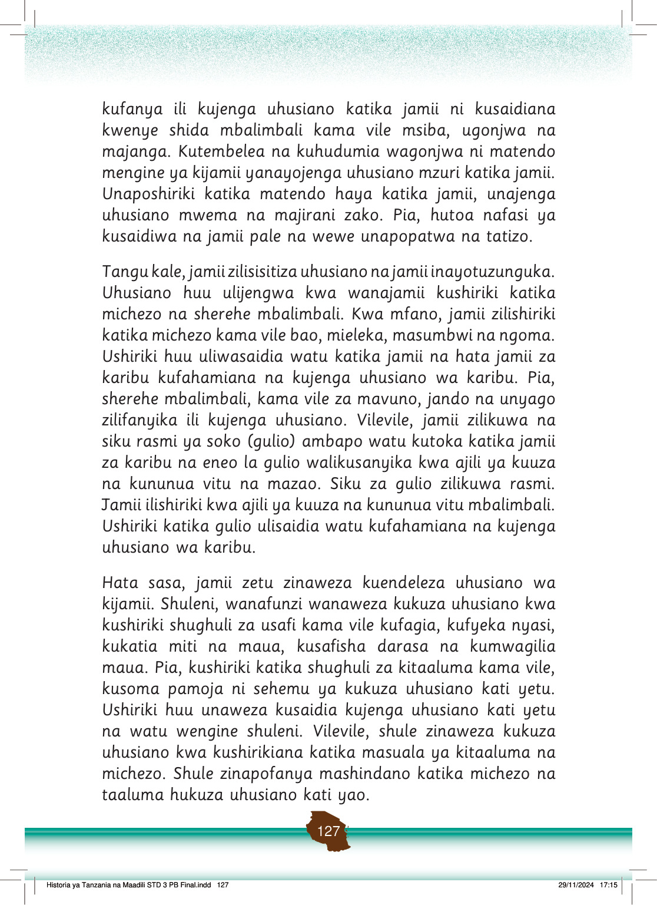

Nyumbani, tunaweza kujenga na kuendeleza uhusiano na majirani zetu kwa kushiriki katika sherehe kama sherehe za harusi na sherehe za dini.
Pia, kushiriki katika vikao na michezo kama inavyoonekana kwenye Kielelezo namba 8 hujenga uhusiano katika jamii.
Watoto wanacheza mpira wa miguu uwanjani karibu na shule au nyumba. Wengine wanasimama na kukaa pembeni wakitazama na kushangilia.
Kielelezo namba 8: Kushiriki michezo katika jamii
Vilevile, tunapaswa kushiriki katika ulinzi na kutoa taarifa ya vitendo vinavyoharibu usalama wa jamii zetu.
Ushiriki huu husaidia kujenga usalama na uhusiano katika jamii.
Kazi ya kufanya namba 6
Kazi ya kufanya namba 6: Chunguza na andika mambo mengine tunayoweza kushirikiana ili kujenga uhusiano katika jamii inayotuzunguka.
Chunguza na andika mambo mengine tunayoweza kushirikiana ili kujenga uhusiano katika jamii zinazotuzunguka.